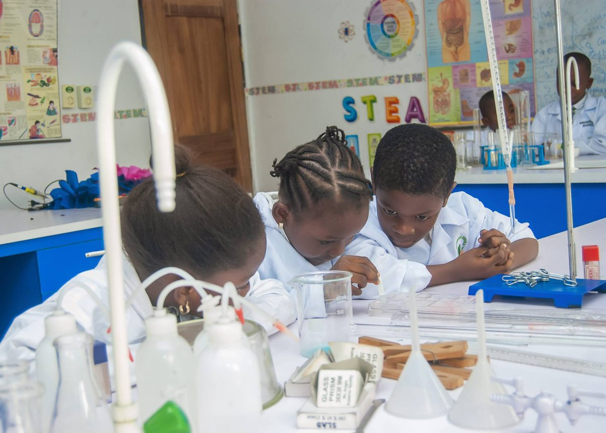
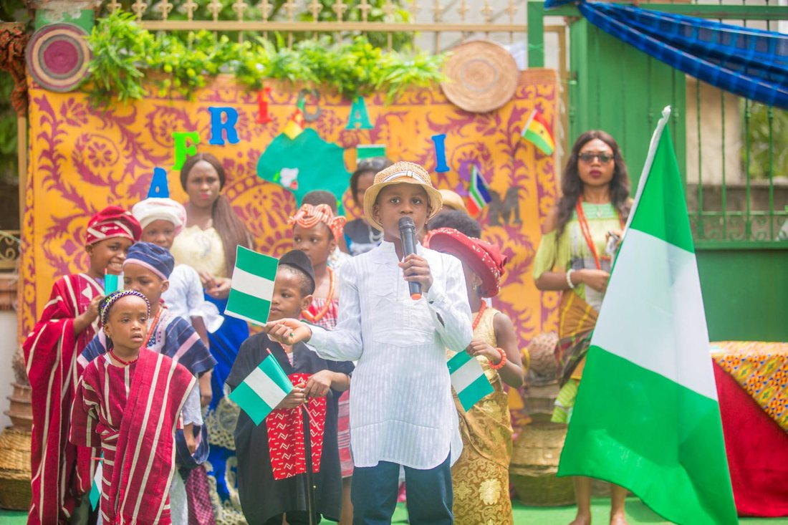
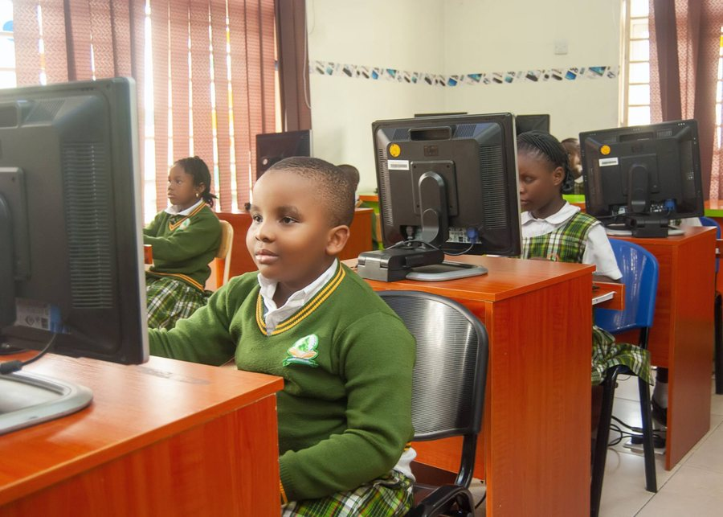
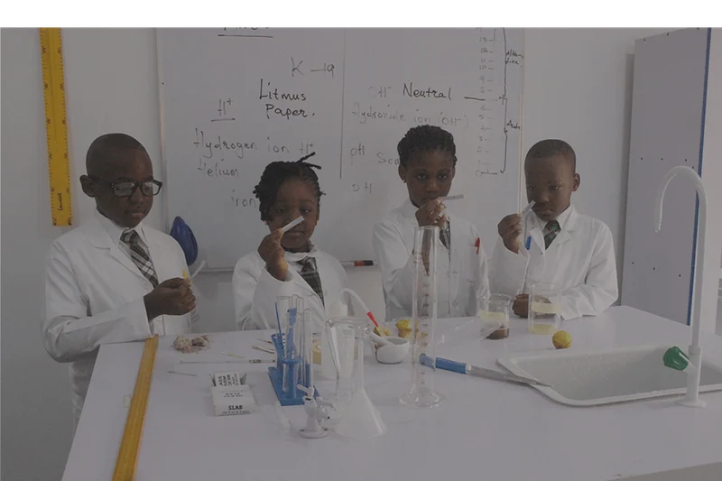
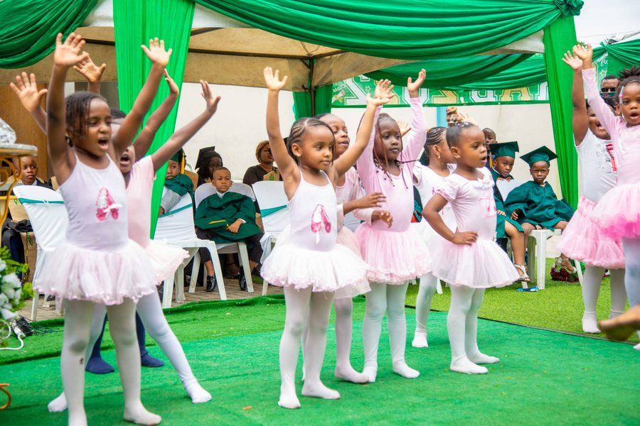
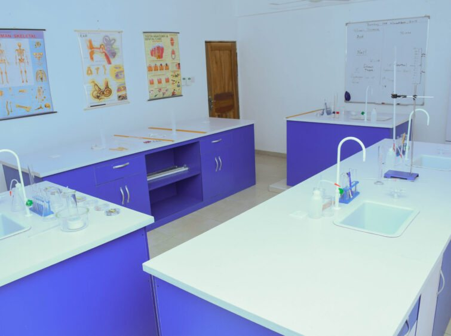
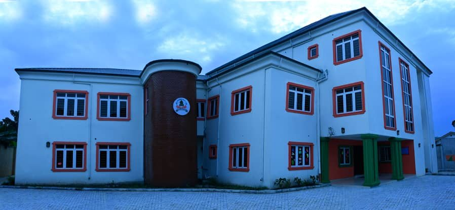

Notice, event or reminder.
Creche, Nursery or Primary.
App, SMS and WhatsApp. See who read it.
Illustration of a feature we can build. Not live today. Notices and dates are samples.
Sample week.





Creche · Nursery · Primary
Plot 15 Walter Akpana Layout, off 394 Ikwerre Road, Rumuepirikom, Port Harcourt
